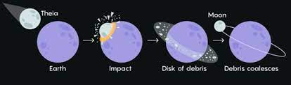

A big part of the development of the Earth has to do with the development of the Moon. There are different hypotheses about how the Moon may have originated. The most accepted idea is the Giant Impact Hypothesis (GIH), which states that a Mars-sized body, called Theia, hit proto-Earth and caused it to split into multiple small parts and still one large part which stayed the Earth (How the Earth and Moon formed). Lots of these smaller parts later concatenated and formed the Moon, it is thought that at least 40% of the Moon is from Theia and the rest from proto-Earth (How the Moon formed). Evidence for this theory can be found by investigating the chemistry of the 382 kg collection of lunar rocks collected by the Apollo missions, which would not have been possible without spacecrafts (Mehta, 2008). However, there are some problems with this theory for which evidence from the Apollo missions is also used. Below I outline what we have learned about the development of the Earth and Moon from the materials brought back to Earth from the Apollo missions and other measurements done at the Moon's surface, which also would not have been possible without spacecrafts.
According to the GIH, the Moon should have been extremely hot in the beginning, if this is indeed true we would expect some things. For example, low-density material would rise to the top of the Moon's surface and high-density materials would go closer to the core. An example of a low-density material is plagioclase when crystallized will form anorthosites. In samples from the Moon’s surface brought back from the Apollo 11 mission, anorthosites were indeed found (Mehta, 2008). Also, the hot Moon would cause volatile elements, elements with a low boiling temperature, like potassium, zinc, and sodium to evaporate into space. Also for this, evidence is found with the use of samples from the Moon since the concentration of these elements, and especially the lighter isotopes have a lower concentration than we would expect if the Moon was never hot (Paniello et. al., 2012; Mehta, 2008).
Something else the GIH predict is that most of Theia’s core would have been mostly absorbed by Earth’s core and thus leaving the Moon with a smaller core. Also, this has been confirmed. This is done with 3 different experiments done on the Moon, consisting of a seismic experiment, an experiment with magnetometers, and one using laser-ranging retroreflectors. Those experiments indicated the core of the Moon is only 25% of its radius, to put this into perspective, for most large bodies like the Earth and Mars this is 50% (Mehta, 2008).
However, the samples from the Apollo missions also contain evidence against the GIH. As said at least 40% of the Moon’s material is from Theia, but Titanium measurements were done, since this element does not vaporize easily, and it was found that this element came from Earth alone. Also, the hydrogen isotopes from 2 Apollo missions and oxygen isotopes from 5 Apollo missions are almost identical to the ones that can be found on Earth (Mehta, 2008). Some other elements that were near measurement precision identical to those on Earth contain and are not limited by: Chromium, Tungsten, and Potassium (Asphaug, 2014).
In conclusion, with the use of spacecrafts, humans were able to do missions to the Moon that have given us much more knowledge about the development of the Moon and therefore the development of the Earth. However, it has not yet brought us closer to a conclusion. Some have adjusted the GIH slightly others have formulated different hypotheses. An example of this is that it is possible that Theia had a similar composition as Earth (Asphaug, 2014), however, scientists from Caltech showed with the help of simulation that the probability that Theia had indeed a similar composition as Earth is smaller than one percent (Mehta, 2008). Another hypothesis is that Theia went really fast and more like a hit-and-run and thus caused the Moon to be primarily made out of proto-Earth material (Asphaug, 2014). This would imply that proto-Earth was larger than we initially thought. To be able to validate all these hypotheses, more knowledge is required and for that more lunar missions are essential and for that spacecrafts are necessary. We could for example look at the materials under the surface, which have not been affected by solar winds and meteorites that much (Mehta, 2008).
Finally, I want to notice that there is also a connection the other way around. If the Moon never developed the Earth of course would have looked very different, but it is also likely, I think, our spacecrafts would not have been as sophisticated as they are today. Because the main reason that we developed spacecrafts that can carry humans, was to bring humans to the Moon. I do not think that there would have been a space race to Venus which has the closest approach to Earth (Stockman et. al. (2019)). The reason for this is that such a trip would take a long time and would be extremely expensive, a lot more expensive than the already pricey trip to the Moon. Also, building on the result I found in the connection with the development of life: the Cold war which caused the development of spacecrafts was probably not long enough to get spacecrafts so sophisticated that they would be able to carry humans to either Mars or Venus. So maybe the Spacewar would have ended when both countries landed a spacecraft on both of these planets, which requires less complex spacecrafts than the ones that carried humans to the Moon and back.